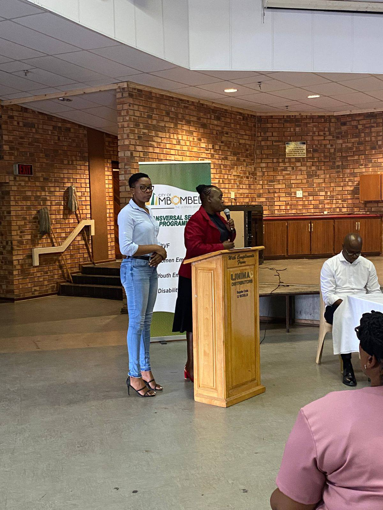

Ashdown Community Development
Building community together
Donate Now

Ashdown Community Development (ACD) has enhanced on organizational capacity through
funding and
comprehensive capacity-building initiatives.
Through ACD's conformity in fulfilling official requirements there was a noted improvement
with compliance on statutory requirements the organisation then graduated and qualified to be
administered under
component 1, where the organisation was supported with seed funding to implement development projects in
their
communities and address social issues like GBVF in the communities in the 2024/25 financial year.
Why We Started
The organisation was established in 2017 and formally registered in
2019, it is located at Barberton under the Umjindi Local Municipality Ehlanzeni, Mpumalanga. The
organisation was initially enrolled under component 3 which focused on organizational strengthening with
no seed funding
during the 2023/24 financial year. Through ACD's conformity in fulfilling official requirements there
was a noted
improvement with compliance on statutory requirements the organisation then graduated and qualified to
be
administered under component 1, where the organisation was supported with seed funding to implement
development projects in
their communities and address social issues like GBVF in the communities in the 2024/25 financial year.
Our Vision
ACD aims to educate communities on GBVF while also creating linkages for economic empowerment. The
organization places a strong focus on key populations, including the LGBTQIA+ community,ensuring
inclusivity
and
access to essential resources and opportunities for marginalized groups.